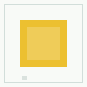

案例一：颜色课，“黄”不是一个裸标签，而是一组可审计图像
01颜色课程
题目内容
课程包 `neutral_colors_v1` 里有红、黄、蓝、绿、白 5 个 entry。以“黄”为例，它有 3 张训练图、1 张 held-out 图和 1 张干扰图。AP 训练时看训练图，验收时再看 held-out 和干扰。
训练材料
 train 0
train 0
 train 1
train 1
train 0train 1
train 2
验收与干扰
 held-out
held-out
held-outcontrast
AP 课程 entry: entry_id: color_yellow neutral_label: 黄 train_asset_refs: 3 held_out_asset_refs: 1 contrast_asset_refs: 1 治理输出: accepted = true held_out_asset_leaked_into_train_refs = false
 train 0
train 0 train 1
train 1 train 0
train 0 train 1
train 1 对
对